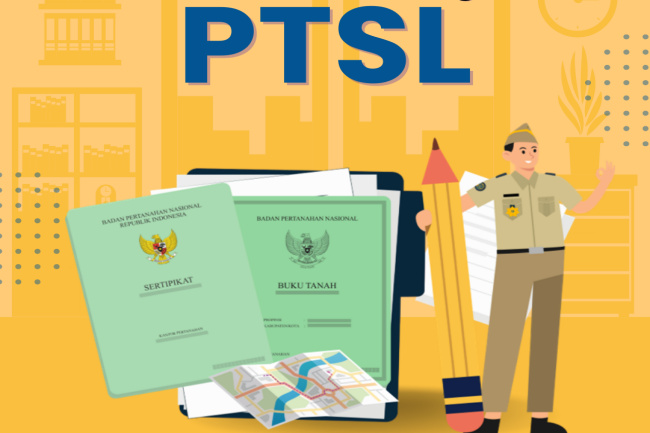

Berita Terkini
Kabar Geospasial
29 Nov 2025

Pertanahan
Percepatan Program PTSL di Kecamatan Gadingrejo
Pemerintah Kota Pasuruan bersama BPN mempercepat proses pendaftaran tanah sistematis lengkap (PTSL)...
Baca Selengkapnya
28 Nov 2025

Tata Ruang
Sosialisasi Revisi Rencana Tata Ruang Wilayah (RTRW)
Dinas PUPR menggelar konsultasi publik terkait perubahan zonasi penggunaan lahan untuk mendukung investasi...
27 Nov 2025

Inovasi
Pemanfaatan Drone untuk Pemetaan Batas Kelurahan
Teknologi fotogrametri udara kini digunakan untuk memverifikasi batas administrasi antar kelurahan dengan presisi...